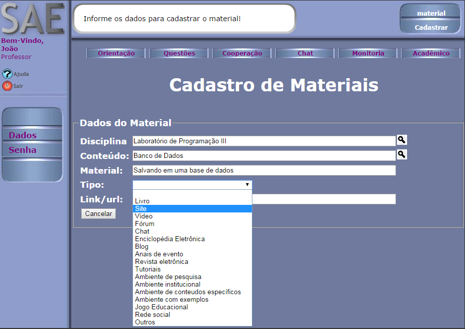

Como cadastrar Material?
-
Para cadastrar material é preciso estar conectado ao SAE. Caso não
saiba, clique aqui.
-
No menu principal, clique em "Material".
-
Na barra lateral, clique na opção "Materiais".

-
Clique no link "Cadastrar Material".

-
Informe a disciplina e o conteúdo clicando no ícone . Na nova janela, insira o nome ou parte do nome para pesquisa e clique em "OK". Escolha a opção de disciplina e conteúdo referente ao material cadastrado clicando no ícone
 .
.

-
Preencha os outro campos e clique no botão "Cadastrar".